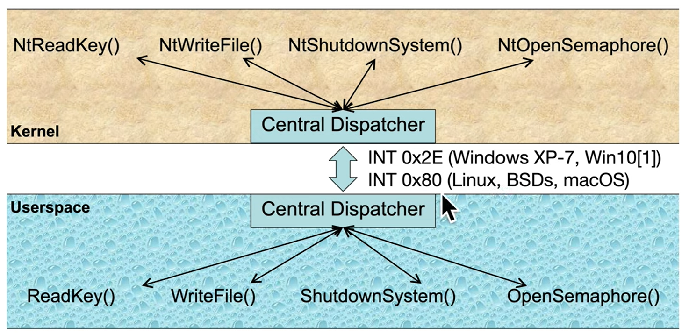

Communication between kernel and user spaces is preformed via a central dispatcher - several options exist.- Call gates (not in use since win95)
- INT (0x2E in win XP-7, 10[1]. 0x80 in linux, BSDs, macOS), up to 0x31 is reserved, beyoned is OS dependent.

But the most used method now is SYSCALL / SYSRET instructions.
SYSENTER / SYSEXIT were aim to 32-bit.
SYSCALL / SYSRET were aimed at 64-bit, instead of extending the previous ones.

in terms of compatibility:


syscall excercise
- What is the name of the function where SYSCALL lands you in the kernel?
0xC0000082 msr is the target ip
0: kd> rdmsr 0xC0000082
msr[c0000082] = fffff804`2c437180
0: kd> ln fffff804`2c437180
(fffff804`2c437180) nt!KiSystemCall64Shadow <- this is the function name in kernel
- What is the first assembly instruction?
looking at the disassembly:
nt!KiSystemCall64Shadow:
fffff804`2c437180 0f01f8 swapgs
- What is the ring 0 CS segment selector?
Loads CS with value stored in IA32_STAR MSR (0xC0000081) bits [47:32] and set SS = (CS + 8)
0: kd> rdmsr 0xC0000081
msr[c0000081] = 00230010`00000000
0023 is sysret, 0010 is syscall.
the segment selector is 0x0010 -> 0000 0000 0001 0000 -> RPL=0, GDT, 0x10 RSH(3) = 0x2 (0y10) record 2.
when looking at GDT(2): type 0y11011 code R+E non-conforming, dpl=0, present, long
R+E fit CS
- What is the ring 0 SS segment selector?
SS=CS+8 = 0x18 RSH(3) = 0x3 (0y11) record 3 in GDT
when looking at GDT(3): type 0y10011 data R+W acceessed, dpl=0, present, long, big=1
data R+E fits SS
- What is the ring 3 CS segment selector? from sysret
Load CS with value stored in IA32_STAR MSR bits [63:48] and adds 16.
0: kd> rdmsr 0xC0000081
msr[c0000081] = 00230010`00000000
CS := 0x23 + 0x10 = 0x33 -> 0y00110011 - RPL=3, GDT, 0x33 RSH(3) = 6 record number
looking at GDT - DPL = 0x3, type code R+E non conforiming
- What is the ring 3 SS segment selector? from sysret
Load SS with value stored in IA32_STAR MSR bits [63:48] and adds 8.
0: kd> rdmsr 0xC0000081
msr[c0000081] = 00230010`00000000
CS := 0x23 + 0x8 = 0x2B -> 0y00101011 - RPL=3, GDT, 0x2B RSH(3) = 5 record number
looking at GDT - DPL = 0x3, type data R+W accessed, BIG (32-bit stack pointer movement), limit 0xfffff, granularity=1
- Which segments previously seen in the GDT have now been shown to be used here, and which haven't?
i really dont remember
- What is MSR 0xC0000083 probably used for based on it's value?
cheating - #define MSR_CSTAR 0xc0000083 /* compat mode SYSCALL target */
0: kd> rdmsr 0xc0000083
msr[c0000083] = fffff804`2c436e40
0: kd> ln fffff804`2c436e40
(fffff804`2c436e40) nt!KiSystemCall32Shadow <- it says syscall 32, compatibility mode
- What are the specific bits from RFLAGS which are masked out on SYSCALL?
Mask clear each bit of RFLAGS against IA32_FMASK MSR (0xC0000084)
0: kd> rdmsr 0xc0000084
msr[c0000084] = 00000000`00004700 -> 0y0100011100000000, bits 8 trap ,9 interrupt enable ,10 Direction ,14 Nested task are cleared